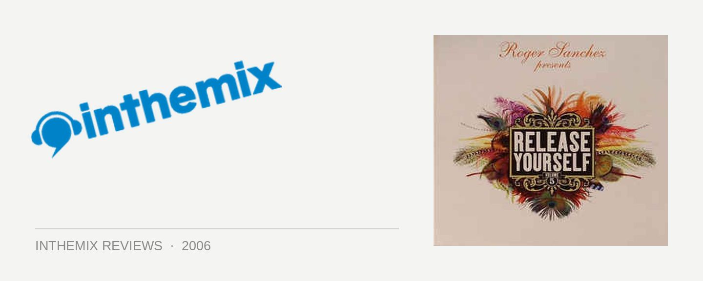

Various Artists - Release Yourself Vol. 5, Mixed by Roger Sanchez
Roger Sanchez – dance legend or an embarrassment to house music? One of the best superstar DJs the world has to offer or a purveyor of smelly processed cheese? Given the dance community’s tendency to lambast anyone that achieves any measure of mainstream success, I’m gonna go with the former rather than the latter. And throwing on a copy of his latest mix album, Release Yourself vol. 5, also offers credit to this theory.
The Pre-Party mix is intended, as the title would suggest, for creating a comfy and laidback vibe prior to the party getting rolling. A sublime mix of really, really chilled deep house with a dash of cruisy progressive, the tempo is slow but the vibe is gentle and uplifting. It’s like a blissed out DJ set at a swanky bar where the aim is not so much to get the punters dancing but to create a relaxed vibe (with just a touch of lizard-lounge sleaze).
While it starts off at a turtle’s pace it slowly progresses into some more club-inspired deep house, featuring that percussive edge that is a Sanchez’s trademark. The selections are blissful, laidback and inherently danceable all at the one time, complimented further by silky-smooth mixing. Anyone who thinks Sanchez is nothing but an anthem-bashing jukebox should have a good listen to Pre-Party to re-evaluate their opinions.
But while the first disc is notable for showing some restraint, the Party mix is a no-holds-barred excursion into pumping big room Sanchez-style sounds. Things kick into high gear almost immediately with Tom de Neef’s dub of Alright, featuring a blissful vocal-driven breakdown that when it finally bubbles over and unleashes the bassline, moves you in a way only the best house music can. A heavy electro influence is present (lets just face it people, it’s impossible to escape), but without drowning out the classic house sound that Sanchez has his roots in. In other words, it’s still sexy and it still has soul.
And then all of a sudden as the CD hits the 40-minute mark, things get a little nasty. The darker side of Sanchez rears its head with a delicious concoction of tribal, tech and electro. It’s some seriously twisted disco, like he’s taken an innocuous piece of house music and poured a vat of acid over it. And as you’d expect from someone with the technical skills of Sanchez, the programming is fantastic. Tasty stuff.
Don’t believe the hype. Roger Sanchez can whip out the big cheesy tunes if the vibe of a sunny summer festival is calling for it but he’s capable of a whole lot more than that. His latest compilation shows him moving across the many different faces of house music – from deep to big room to electro to tech to tribal – and the results are very inviting indeed. As my first taste of the Release Yourself series it gets a big thumbs up: far from a soggy plate of cheese that’s passed its use by date, Release Yourself vol. 5 is all class.